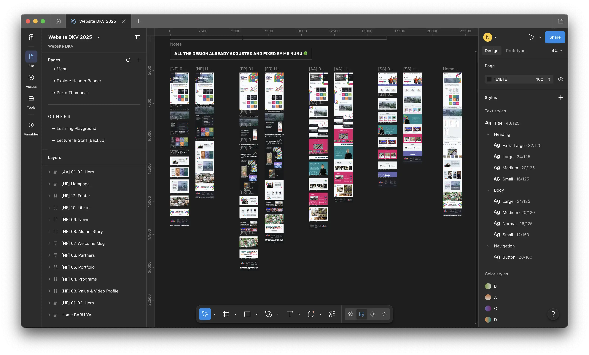
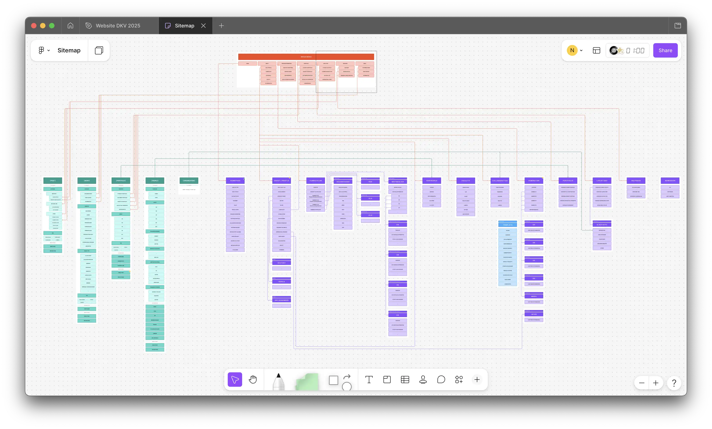
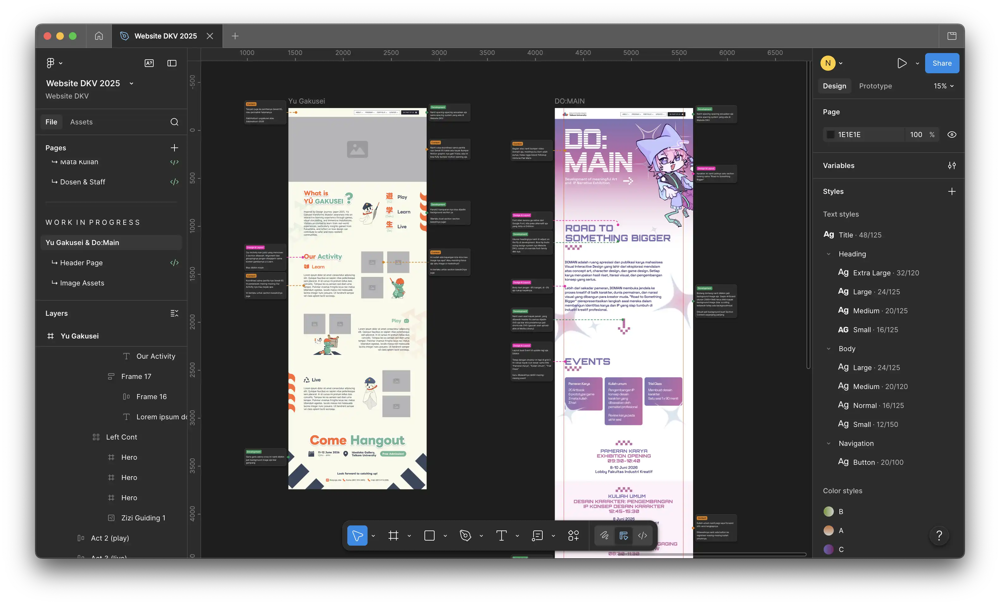

DKV Telkom University Digital Transformation
End-to-end transformation of the website across UX/UI redesign, information architecture, technical rebuild, content development, and ongoing web operations
- Category
- Website and Content Management System
- Period
- Sep 2025 – Dec 2026
- Role
- Lead Operations
- Tools
- Bricksbuilder, Wordpress, Figma
Leading the end-to-end transformation of the DKV Telkom University website across UX/UI redesign, information architecture, technical rebuild, content development, and ongoing web operations.
The goal was to improve the overall website experience for students, prospective students, parents, civitas academica, industry, partners, and the wider public, while establishing the website as a structured digital archive for the program's activities and information.
Challenge
How might we publish, archive and convey all the program's information for public audience such as student, future students, civitas academica, industry partner so that they interested into engaging with DKV Telkom program
Project's Proses
The transformation was not simply a visual redesign. The website needed to:
- Establish a digital experience aligned with the evolving DKV brand.
- Restructure a wide range of academic, profile, portfolio, news, and event information.
- Provide a maintainable CMS structure for ongoing content operations.
- Move from a website that primarily presented information into a platform that could continuously support and document the program's activities.
- Serve different audiences with different information needs.
Project Phase
Batch 1 — Planning & Iteration
Focused on defining the website direction while working alongside the Branding team as the brand guideline was being developed.
- Website review and information restructuring.
- UX/UI and landing-page exploration.
- Layout iteration and brand alignment.
- Planning reusable content structures.
- Student input to support the layout direction.

Batch 2 — Development & Launch
Focused on building the new website from scratch and establishing its technical foundation.
- WordPress CMS setup.
- Reusable page and content structures.
- People, Courses, OBE/PLO/CLO, Portfolio, News, and other content structures.
- Content rebuilding and population.
- Operational documentation.
- Public launch of the new website.

Batch 3 — Website Operations
Focused on using and continuously developing the website after launch. The main focus documented for this phase is event landing pages, including:
- Do:Main Exhibition
- Tabimatsuri Yuugakusei Exhibition

These demonstrate how the website foundation can support new experiences and communications beyond the initial launch.
Results
The transformation established a new digital foundation for DKV Telkom University that combines brand expression, structured information, content management, and ongoing web operations.
The website's successfully reached its goal to communicate and archive the program's vision, mission, education, and activities for these audiences: students, prospective students, parents, civitas academica, industry, partners, and the wider public.
The website now provides dedicated structures for:
- Program Profile — profile, accreditation, history, facilities, collaboration, and people.
- Academic Information — curriculum, courses, specializations, and OBE/PLO/CLO.
- Portfolio & Showcase — student and program work.
- News & Information — ongoing program communication.
- Events — dedicated landing pages for exhibitions and other activities.
- Content Management — structured CMS workflows that allow information to be maintained and updated over time.
The result is not only a refreshed public-facing website, but a more sustainable digital platform that can continue to support the program's communication, documentation, and activities.
Roles & Contribution
People
Stakeholder's
- DKV Telkom University Program Study
- Leadership Team
- Branding Team
- Direktorat Pusat Teknologi Informasi (PuTI) Telkom University
Team's
Lecturer
- Nurizka Fitrianingrum
- Astri Noviani
Students
- Siti Aulia Rahman
- Sasi Afrila Putri Prayudisti
- Farel Aditya Azhar
- Muhammad Fatih Maulana
- Aisyah Putri Adystya
- Almirafiqa Putri Ramdhany
- Anqiyaa Devian Putra
- Ariq Rifqi Febrian
- Khayyirah Elysia Gunawan
- Prayoga Erik
- Lexa Ditya Giza Nuraini
- Dhiya Nasywa Sausan
Roles
People in Charge for DKV Telkom Website
Leading the end-to-end transformation of the DKV Telkom University website covering UX/UI redesign, information architecture restructuring, technical rebuild, content development, and ongoing web operations.
Key Activities
- Requirements analysis — Analyzed the website requirements and the information that needed to be communicated.
- UI/UX Design — Designed the website experience and interface to present bootcamp information in a clearer flow.
- Information structuring — Organized program, registration, testimonial, FAQ, and supporting information into scannable website sections.
- Client relationship management — Managed communication and alignment with the client throughout the design process.
- Design coordination — Connected the requirements and UX decisions into the resulting website design and development work.